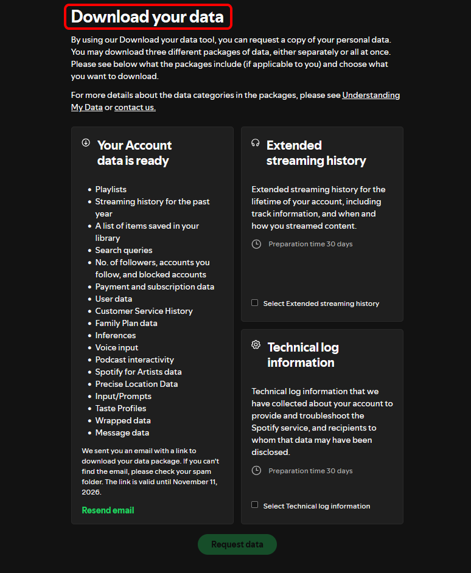
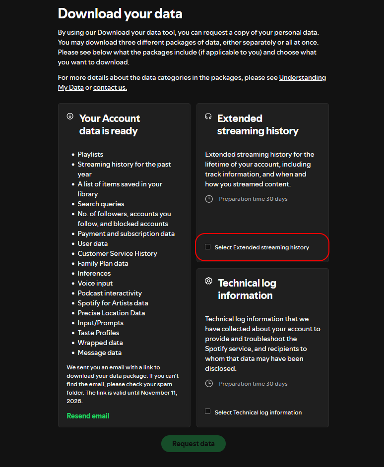
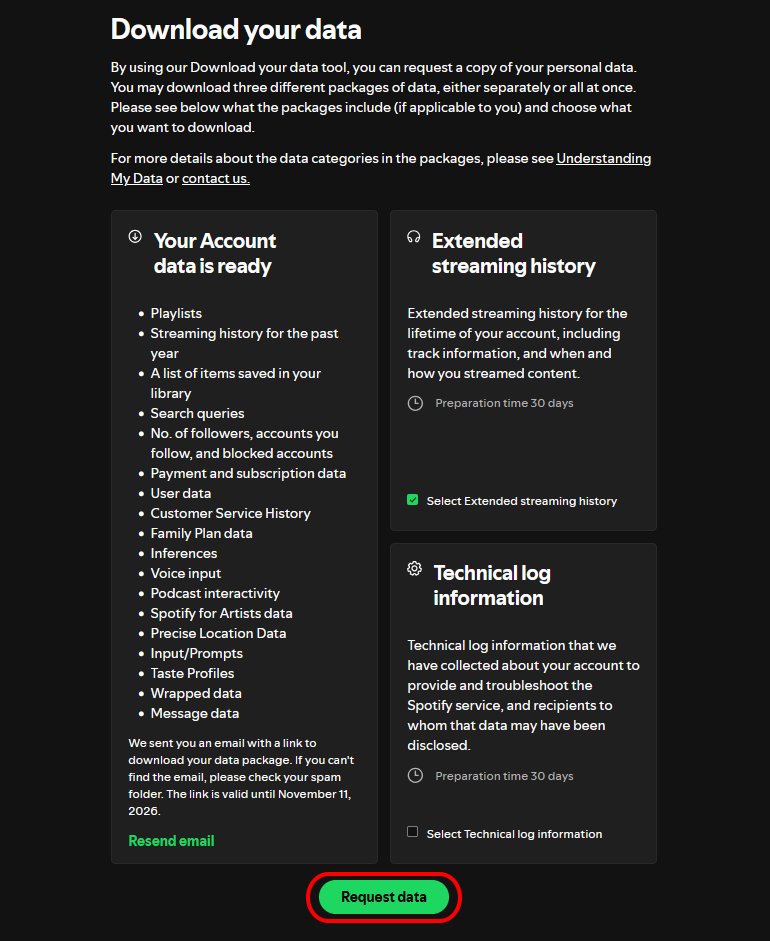
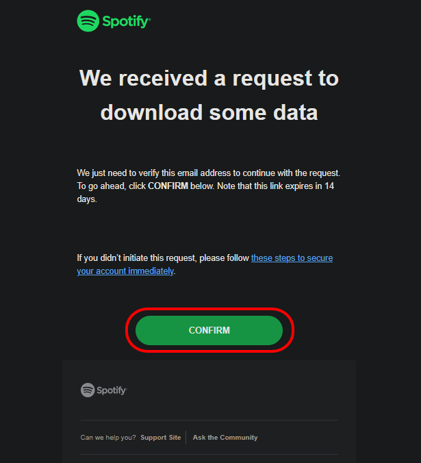
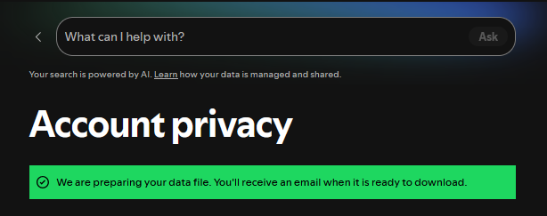
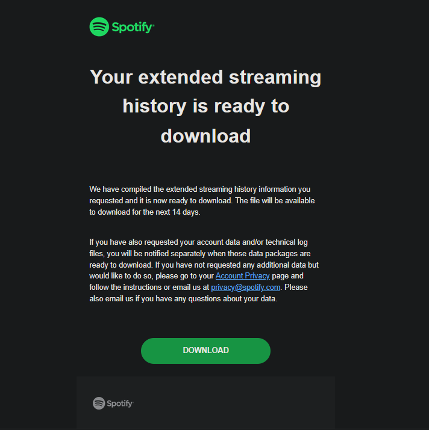

How to get the .zip?
-
Log in to Spotify in your browser (not the app)
-
Head over to spotify.com/us-en/account/privacy
-
Scroll to the bottom of the page and find “Download your data”

-
Tick the
Select Extended streaming historybox under Extended streaming history
-
Click the “Request data” button

-
In your email provider (Gmail, ProtonMail etc.), confirm the request of your data. You should receive a mail

It should take you to the Account privacy page and look like this:

-
After a couple of days, click on the
Downloadbutton in the new mail
Import the .zip on the main site and see your stats!
Go to Neo Cards